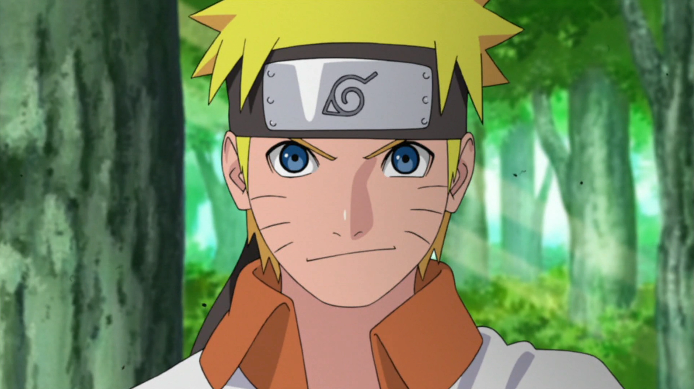
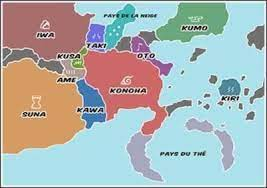
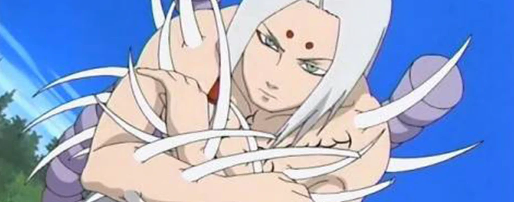
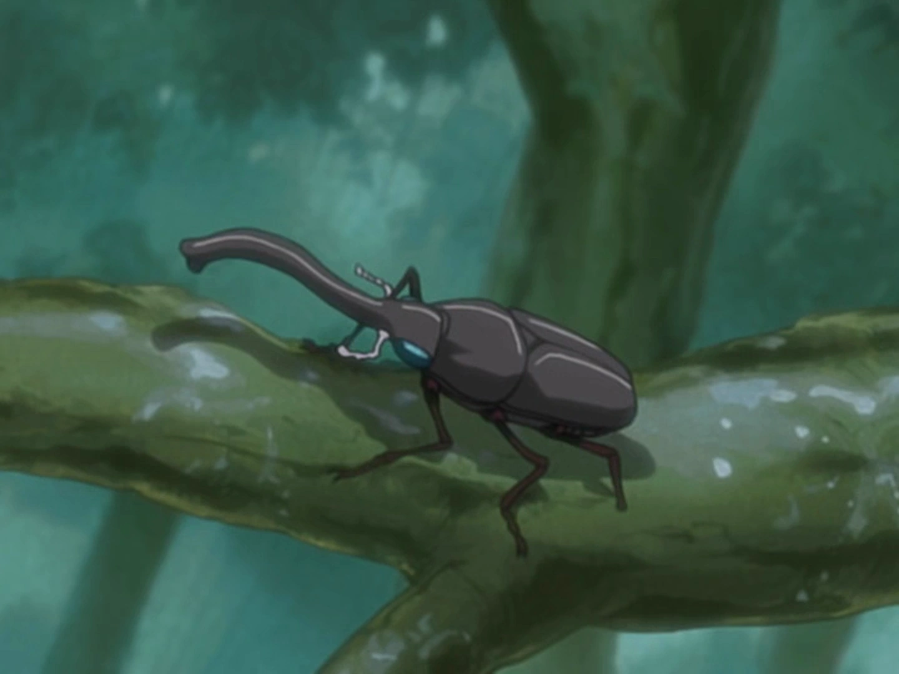
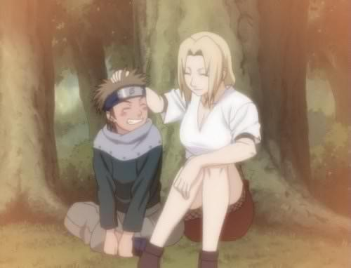
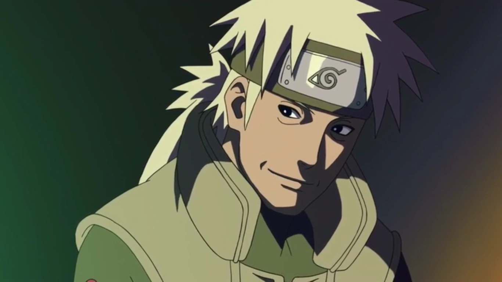
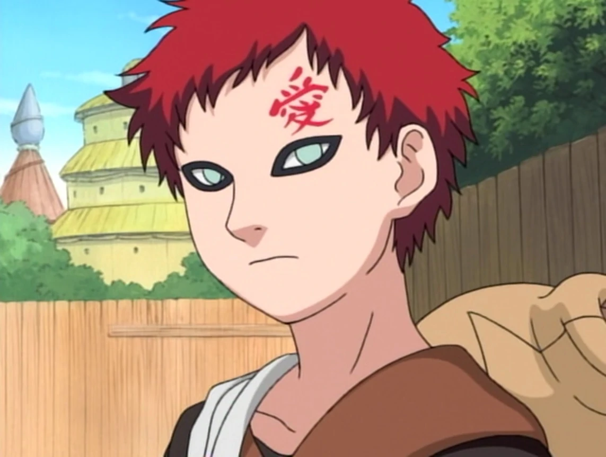
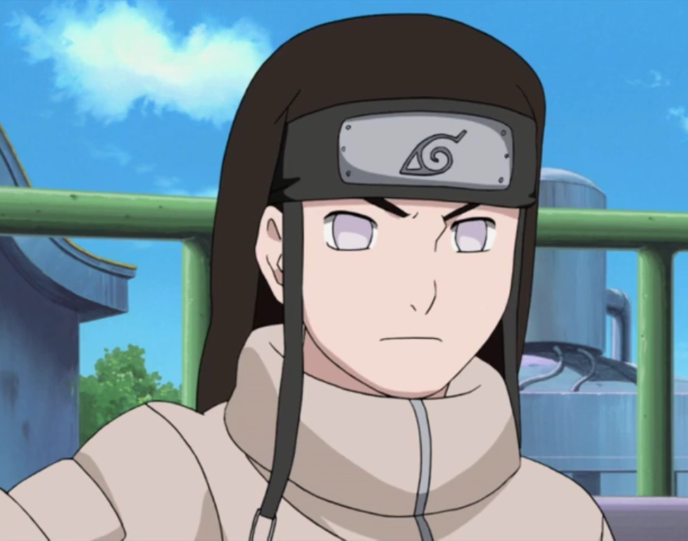
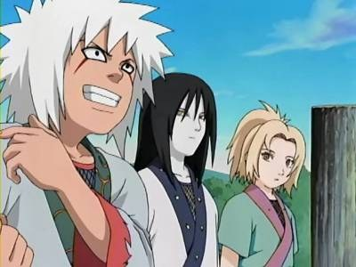

Anime Qcm
Ceci est un QCM sur Naruto !
Connaissez-vous Naruto sur le bout des doigts ?
A vous de jouer pour avoir 10/10 :D .
Pour n'avoir aucun spoil, vous n'aurez pas les réponses a la fin du quizz.
Commencez le test maintenant !

Quel est ce personnage ?
Naruto Uzumaki
Senju Tobirama
Uchiha Itachi
Haku

Le Tsuchikage est le kage de quelle village ?
Kumo
Iwa
Suna
Kiri
Qui a affronté Gaara au 9ème tour de l'examen chûnin ? ?
Rock Lee
Naruto
Sasuke
Neji

À quel clan appartient Kimimaro ?
Akimichi
Kaguya
Yamanaka
Uchiha

Quel est le nom de l'insecte que Shino, Hinata, Kiba et Naruto cherchent dans quelques épisodes ? (L'insecte renifleur)
bîkôkûchôu
Bikoucha
Biklouclu
bikôchû

Quel est le nom du petit frère de Tsunade ?
Nowoko
Niwako
Nawaki
Natsuki

Quel est le vrai nom du "Croc Blanc de Konoha" ?
Sakumo
Daroso
Shakimi
Kakichi

Que signifie "Gaara" dans l'anime ?
Seul
Un être qui aime tuer
Amour
Ça ne veut rien dire de particulier

Que porte Neji sous son bandeau ?
Une cicatrice
Un troisème oeil
Un sceau
Rien

Qui a formé Jiraya, Tsunade et Orochimaru ?
Sandaime
Nidaime
Shodaime
Sarutobi